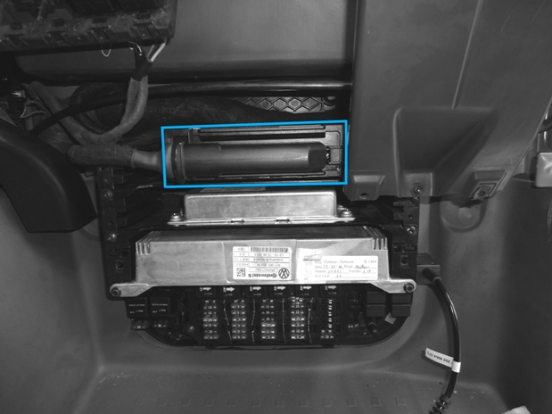
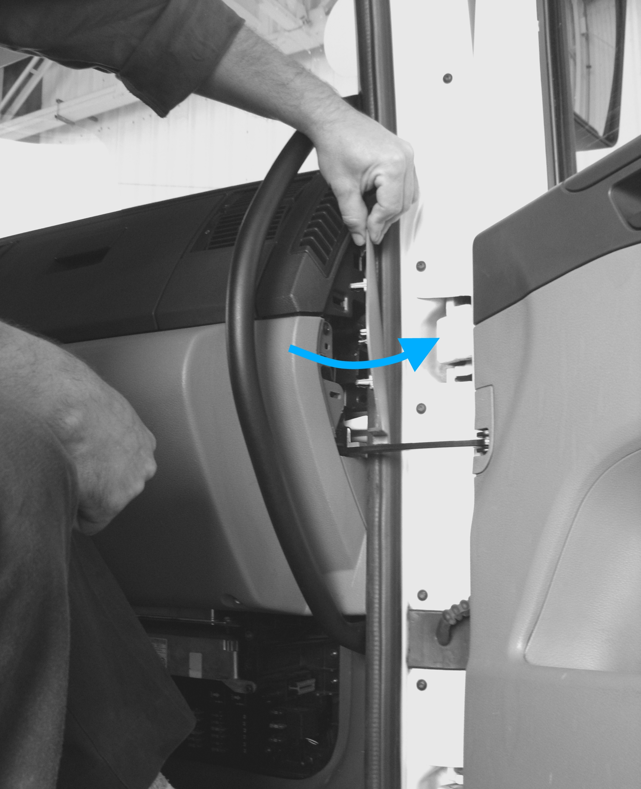
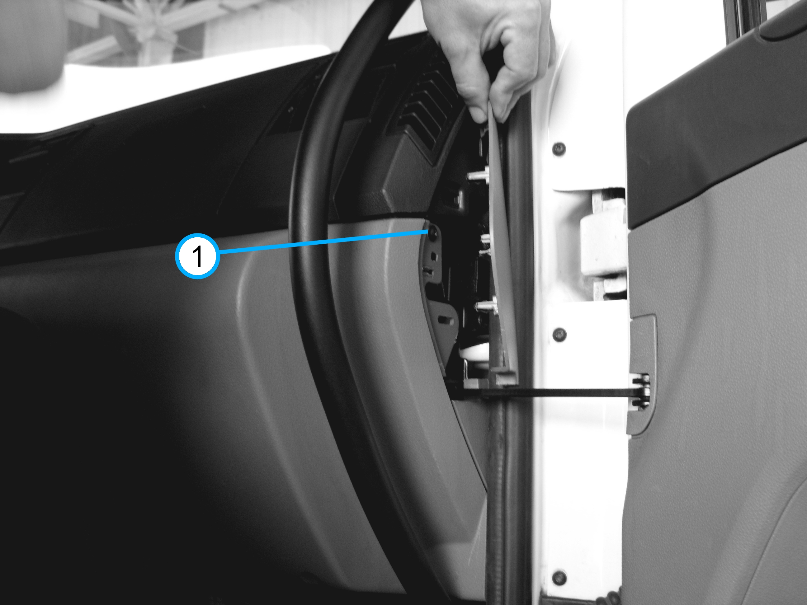
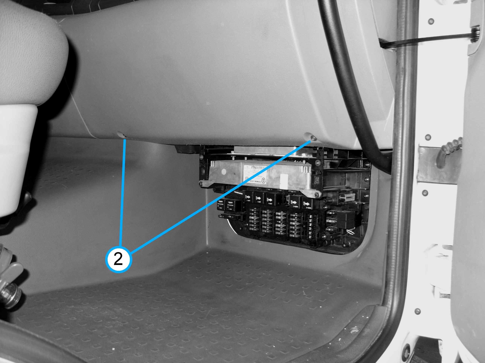

Informa?s Importantes
Danos severos ao sistema el?ico (curto-circuito). • Interromper a corrente (desligar o interruptor principal da bateria) e soltar os cabos da bateria.
Danos aos componentes por conexões parafusadas incorretamente. • Caso parafusadeiras de impacto sejam utilizadas, estas s??dem ser utilizadas com aperto inicial de no m? 50% do valor do torque de aperto indicado. • O aperto final deve ocorrer sempre manualmente, utilizando o torqu?tro.
• Ap?? montagem do motor, deve-se parametrizar novamente o m??o de comando do motor e apagar a mem?? de falhas.
Remo?

O m??o TCU ( Transmission Control Unit) est?ocalizado acima da PTM (Power Train Manager) no compartimento el?ico (caixa de fus?is), que fica na posi? inferior em frente ao banco do passageiro (conforme imagem acima). 
- Remova o acabamento lateral com o aux? de uma cunha pl?ica, conforme a imagem acima.  - Solte o parafuso de fixa? (1) do acabamento do lado direito, conforme indicado na imagem acima. 
- Remova o acabamento do lado direito inferior, soltanto os parafusos de fixa? (2), conforme indicado na imagem acima.
- Deslocar a trava (3) no sentido das setas, liberando o conector da TCU (4).
- Retire o conector da TCU (4) no sentido das setas, conforme indicado na imagem acima.
- Solte o parafuso (5) do suporte da TCU (Transmission Control Unit) do lado esquerdo, conforme indicado na imagem acima.
- Solte o parafuso (6) do suporte da TCU (Transmission Control Unit) do lado direito, conforme indicado na imagem acima.
- Solte o parafuso (8) da fixa? inferior do painel, conforme indicado na imagem acima.
- Alivie suavemente o revestimento (9) para a passagem do suporte da TCU, conforme a imagem acima.
- Retire o suporte do m??o TCU (Transmission Control Unit), puxando-o sobre o guia, e inclinando-o para baixo conforme o deslizamento, at? sa? completa do suporte do m??o TCU, conforme a imagem acima.
Por fim, instalar o m??o TCU (Transmission Control Unit) na ordem inversa da remo?.
|
||||